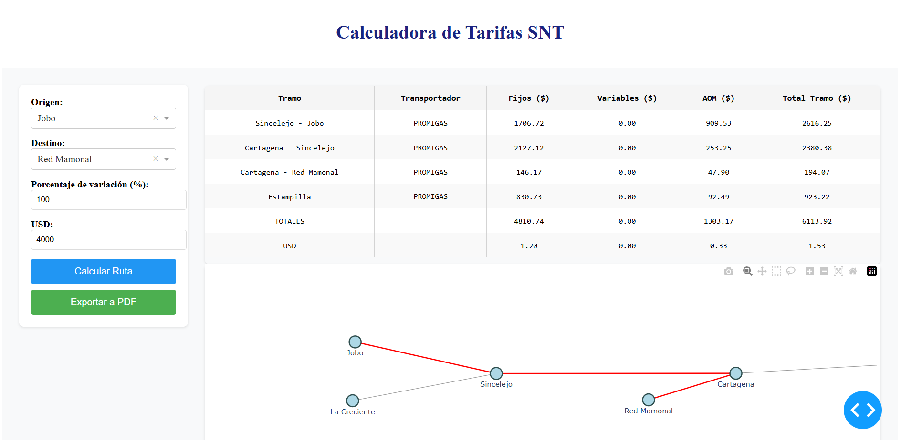

Calculadora de tarifas SNT

El presente sistema es una calculadora de tarifas del Sistema Nacional de Transporte de Gas (SNT), diseñada para determinar costos de transporte en función del origen y destino de un trayecto. Se basa en un modelo de grafos donde los nodos representan estaciones y los enlaces representan tramos con sus costos asociados.
Características Principales
- Cálculo automático de la ruta de transporte de gas.
- Representación gráfica de la red de transporte con rutas destacadas.
- Conversión de costos de transporte en USD según la tasa de cambio ingresada.
- Exportación de resultados a PDF para facilitar el análisis y documentación.
- Interfaz interactiva con Dash y Plotly.
2. Objetivos del Proyecto
Automatizar el cálculo de tarifas del SNT basado en la topología de la red de PROMIGAS y TGI.
Facilitar la toma de decisiones mediante visualización de costos y rutas.
Optimizar la consulta de tarifas, reduciendo la dependencia de cálculos manuales.
Exportar reportes en formato PDF con detalles de costos por tramo.
3. Funcionamiento del Sistema

3.1. Datos de Entrada
- Origen y Destino: Estaciones de transporte de gas natural en la red del SNT.
- Porcentaje de variación: Ajusta los costos fijos y variables en función de un factor de ponderación.
- Valor del USD: Convierte los costos de pesos colombianos a dólares.
3.2. Flujo de Cálculo
- Se obtiene la red de transporte desde un archivo Excel ("Tramos SNT.xlsx").
-
Se construye un grafo dirigido con los datos de origen, destino y costos.
- Se crea un grafo dirigido a partir de los datos de un archivo Excel. Cada fila del archivo representa una conexión entre dos nodos ('Origen' y 'Destino') con varios atributos asociados a esa conexión. El grafo resultante permite modelar y analizar rutas y conexiones entre diferentes puntos, considerando atributos como costos fijos, variables y otros. Este grafo puede ser utilizado posteriormente para calcular rutas, costos y realizar otras operaciones de análisis de redes.
-
Se calculan los costos fijos, variables y de operación y mantenimiento (AOM).
- Se genera un resumen de costos por tramo y un total acumulado.
- Se convierte el total a USD según la tasa de cambio ingresada.
- Se muestra el resultado en una tabla interactiva y una visualización gráfica de la ruta.
- Se permite la exportación en PDF con todos los detalles del cálculo.
4. Arquitectura del Sistema
4.1. Diagrama de Flujo
graph TD
A[Inicio] --> B[Cargar Datos desde Excel]
B --> C[Construcción de Grafo de Transporte]
C --> D[Seleccionar Origen y Destino]
D --> E[Aplicar Algoritmo de Ruta ptima]
E --> F[Calcular Tarifas Fijas, Variables y AOM]
F --> G[Convertir Tarifas a USD]
G --> H[Visualización de Resultados]
H --> I[Exportar Reporte en PDF]
I --> J[Fin]5. Plan de Implementación y Mejoras Futuras
Integración con bases de datos en línea para actualizar tarifas automáticamente.
Optimización de cálculos para mejorar la eficiencia del algoritmo de rutas.
Mejoras en la visualización gráfica con capas de información adicionales.
Generación de reportes avanzados con análisis de costos históricos.
7. Beneficios Claves
- Automatización Total: Cálculo rápido de tarifas y rutas sin necesidad de intervención manual.
- Visualización Interactiva: Gráficos y tablas para interpretar los costos de transporte.
- Exportación a PDF: Reportes detallados para toma de decisiones.